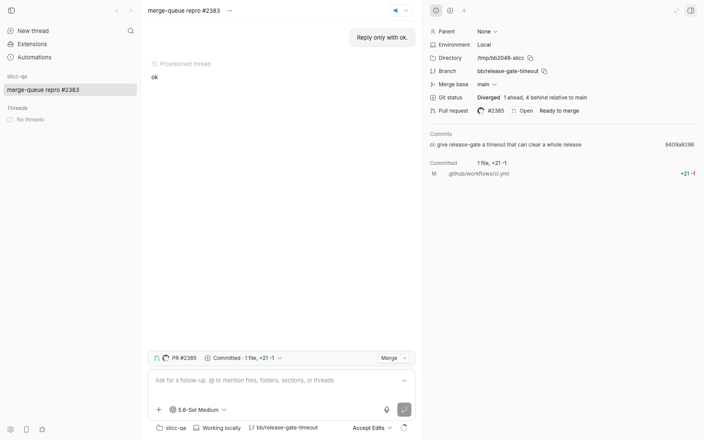
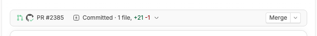
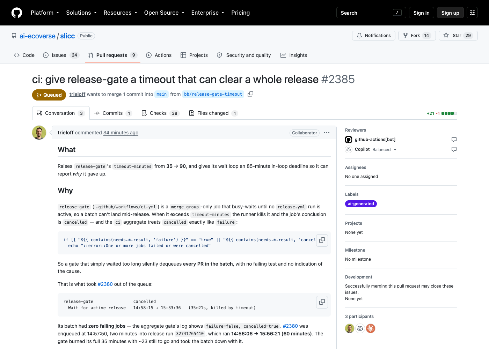
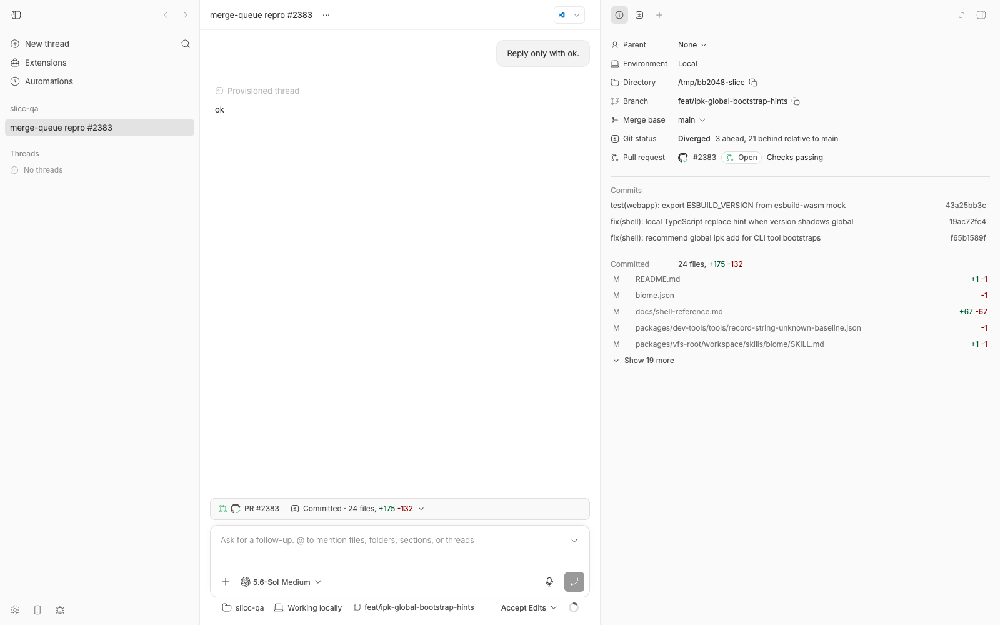

#2048 · A pull request in a GitHub merge queue reads as ready to merge, and bb offers a merge action the queue already owns
Verdict: REPRODUCED (live, against real GitHub merge-queue entries) · Root-cause confidence: high
1. TL;DR
When a GitHub repository uses a merge queue, a pull request that has been added to the queue is no longer something a human should merge by hand: the queue will merge it once its batch checks pass. bb reads pull-request state exclusively through gh pr view --json <fixed field list> on the host daemon, and that field list (indeed, the whole gh pr view --json surface) has no merge-queue field. The server then derives mergeability from mergeable/mergeStateStatus alone. A queued PR whose queue checks have passed comes back as mergeable: MERGEABLE, so bb labels it "Ready to merge" and renders the green Merge split button while GitHub itself shows an ochre Queued badge. A queued PR whose queue checks are still running comes back UNKNOWN/UNKNOWN; bb shows it as a plain green "Open · Checks passing" PR with no queue indicator at all (the CLI prints Merge: unknown). I reproduced both cases live on 2026-08-24 against the public repo ai-ecoverse/slicc, which had three PRs in its queue at the time, through bb's real daemon → server → web/CLI path on a dev instance.
2. Claims vs findings
| Claim from the issue | Status | Evidence |
|---|---|---|
| bb shows no sign that a PR has been queued | Verified | Live: workspace on queued PR #2383 (queue position 1). Web shows "Open · Checks passing" (screenshot); CLI thread show prints Attention: none … Merge: unknown. No "queued" anywhere. GitHub shows "Queued" for the same PR (screenshot of #2385). |
A queued PR that passed its pre-merge checks reports mergeable: MERGEABLE and bb classifies it mergeable / ready_to_merge and renders the green Merge split button | Verified | Live on #2385 (queue position 3, isInMergeQueue: true, gh: UNSTABLE/MERGEABLE). Server API returned mergeability.state: "mergeable", attention: "ready_to_merge"; banner rendered the "Merge" split button (screenshot). CLI: Attention: ready_to_merge … Merge: mergeable. |
A queued PR whose queue checks are still running reports mergeStateStatus: UNKNOWN and lands in mergeability.state = "unknown" | Verified | Live on #2383 and #2380 (both AWAITING_CHECKS): gh → UNKNOWN/UNKNOWN; server → mergeability.state: "unknown", attention: "none" (API response). |
| …which renders as "Mergeability unknown" with an amber warning triangle | Refuted (for web and mobile) | The label exists in MERGEABILITY_DISPLAY.unknown on web and mobile, but neither surface renders it for this state: the metadata row only consults the mergeability display for conflicts/blocked (ThreadMetadataContent.tsx#L460-L470), and mobile's attention map likewise. What the user actually sees is a green "Open · Checks passing" row indistinguishable from a non-queued PR. The only surface that exposes "unknown" verbatim is the CLI (Merge: unknown). The underlying state claim is correct; the rendering claim is not. |
gh pr view --json offers no merge-queue field (fixed list verbatim) | Verified | gh pr view 1 -R get-bb/bb --json isInMergeQueue → Unknown JSON field: "isInMergeQueue"; the printed field list on gh 2.85.0 matches the issue's list exactly (no isInMergeQueue/mergeQueueEntry). |
isInMergeQueue and mergeQueueEntry exist only on the GraphQL PullRequest type | Verified | GraphQL introspection of PullRequest lists isInMergeQueue, isMergeQueueEnabled, mergeQueue, mergeQueueEntry; MergeQueueEntry has position, state, enqueuedAt, estimatedTimeToMerge, solo, jump. |
GitHub's MergeStateStatus enum has no queued member | Verified | Introspection: DIRTY, UNKNOWN, BLOCKED, BEHIND, UNSTABLE, HAS_HOOKS, CLEAN. (bb's schema additionally lists DRAFT, which is not in the live enum; harmless.) |
| Not draft-related; draft PRs are classified correctly | Verified (by code) | assembleThreadPullRequestMergeability checks isDraft first; not exercised live. |
Not fixable in a plugin; needs a HOST_DAEMON_PROTOCOL_VERSION bump | Verified | The data originates in the daemon's gh call and crosses the wire as the .strict() gitHostPullRequestSchema (thread.ts#L224-L240); any new field changes the workspace.pull_request RPC result. Current version: 164. |
Version: bb 0.38.0 at 6da2a7a9 | Verified still present at base | git log 6da2a7a9..494f66526 on the relevant files shows only unrelated commits (#2169, #2252, #2140, #2057); origin/main has nothing beyond base for these paths. Not fixed. |
| Expected: queue position reported (e.g. #2241 carries position 4) | Unverified as requirement | Product expectation, not a defect claim. The data is available from mergeQueueEntry.position (live: #2385 → position 3, estimatedTimeToMerge: 1919). |
{kind=link}
{kind=link}
{kind=link}
3. Environment
- bb base commit
494f66526913557ab076e048218236f0a6610927(origin/main 2026-08-24; HEAD of this worktree was checked out to it). - macOS 26.5.2 (25F84), Apple Silicon; Node v22.23.1;
gh version 2.85.0 (2026-01-14); codex-cli 0.149.1 (provider used only for one "Reply only with ok." turn to create the thread). - Dev instance (own worktree): App
http://localhost:12940, Serverhttp://localhost:20940, Host daemonhttp://127.0.0.1:28940, data dir~/.bb-dev/bb-machines-HOST.getbb.app-checkouts-bb-.claude-worktrees-wf_846839f8-f8a-28-2cbb14540d3a(deleted at cleanup). - Repository under test: public
ai-ecoverse/slicc(merge queue onmain), blobless clone at/tmp/bb2048-sliccregistered as bb projectproj_aesm74wkuh, threadthr_gtfpf2sb8f, environmentenv_bfft5yfefw(unmanaged workspace = the clone itself, so the workspace branch is the PR head branch). - All GitHub access was read-only (
gh pr view,gh api graphqlqueries). Nothing was pushed, merged, or commented.
4. Minimal reproduction
Two layers: (A) a live end-to-end run through the real daemon/server/UI, which needs a repository with PRs currently in its merge queue; (B) a deterministic unit repro of the server assembler with the captured raw values, which needs nothing.
A. Live (daemon → server → web/CLI)
- Find queued PRs (read-only).
ai-ecoverse/slicchad three at 17:13Z:$ gh api graphql -f query='{repository(owner:"ai-ecoverse",name:"slicc"){mergeQueue{entries(first:20){nodes{position state pullRequest{number mergeStateStatus mergeable isInMergeQueue}}}}}}' [{"position":1,"state":"AWAITING_CHECKS","pullRequest":{"number":2383,"mergeStateStatus":"UNKNOWN","mergeable":"UNKNOWN","isInMergeQueue":true}}, {"position":2,"state":"AWAITING_CHECKS","pullRequest":{"number":2380,"mergeStateStatus":"UNKNOWN","mergeable":"UNKNOWN","isInMergeQueue":true}}, {"position":3,"state":"AWAITING_CHECKS","pullRequest":{"number":2385,"mergeStateStatus":"UNSTABLE","mergeable":"MERGEABLE","isInMergeQueue":true}}]Script:poll-merge-queue.sh; full log:queue-poll.log. - Run the exact read bb's daemon makes (field list from
GH_PR_VIEW_JSON_FIELDS) — scriptsave-gh-views.sh, raw output saved asgh-pr-view-2383.json,gh-pr-view-2385.json:$ gh pr view 2383 -R ai-ecoverse/slicc --json number,title,state,url,isDraft,baseRefName,headRefName,updatedAt,statusCheckRollup,reviewDecision,reviewRequests,mergeStateStatus,mergeable | jq -c '{number,state,mergeStateStatus,mergeable}' {"number":2383,"state":"OPEN","mergeStateStatus":"UNKNOWN","mergeable":"UNKNOWN"} $ gh pr view 2385 ... | jq -c '{number,state,mergeStateStatus,mergeable}' {"number":2385,"state":"OPEN","mergeStateStatus":"UNSTABLE","mergeable":"MERGEABLE"} $ gh api graphql -f query='{repository(owner:"ai-ecoverse",name:"slicc"){pullRequest(number:2385){isInMergeQueue mergeQueueEntry{position state enqueuedAt estimatedTimeToMerge}}}}' {"data":{"repository":{"pullRequest":{"isInMergeQueue":true,"mergeQueueEntry":{"position":3,"state":"AWAITING_CHECKS","enqueuedAt":"2026-08-24T17:12:42Z","estimatedTimeToMerge":1919}}}}} - Feed those files through bb's own parser and assembler (
assemble-live-gh-output.mjs, run with the worktree'stsx):PR #2383 state=OPEN gh(mergeStateStatus=UNKNOWN, mergeable=UNKNOWN) -> mergeability=unknown checks=passing attention=none mergeButtonShown=false PR #2385 state=OPEN gh(mergeStateStatus=UNSTABLE, mergeable=MERGEABLE) -> mergeability=mergeable checks=passing attention=ready_to_merge mergeButtonShown=true
Expected: both carry a queued state; neither ismergeable/ready_to_merge. - Same thing through the running product. Start a dev instance, clone slicc under
/tmpon a queued PR's head branch, register it as a project, spawn a thread on that path:$ git clone --filter=blob:none --no-checkout https://github.com/ai-ecoverse/slicc.git /tmp/bb2048-slicc $ git -C /tmp/bb2048-slicc fetch origin feat/ipk-global-bootstrap-hints:feat/ipk-global-bootstrap-hints && git -C /tmp/bb2048-slicc checkout feat/ipk-global-bootstrap-hints # PR #2383's head $ git -C /tmp/bb2048-slicc branch --set-upstream-to=origin/feat/ipk-global-bootstrap-hints $ scripts/bb-dev-app current # prints App/Server/Host daemon URLs $ curl -s -X POST $BB_SERVER_URL/api/v1/projects -H 'content-type: application/json' \ -d '{"name":"slicc-qa","source":{"type":"local_path","path":"/tmp/bb2048-slicc","hostId":"host_bz7dbnad3p"}}' $ pnpm bb:dev thread spawn --project proj_aesm74wkuh --environment /tmp/bb2048-slicc --provider codex --permission-mode accept-edits --prompt "Reply only with ok." --json $ pnpm bb:dev thread show thr_gtfpf2sb8fEnvironment: Working locally (env_bfft5yfefw) Pull request: #2383 open - fix(shell): recommend global ipk add for CLI tool bootstraps Branch: feat/ipk-global-bootstrap-hints -> main Attention: none Checks: passing (32 passed, 0 failed, 0 pending, 32 total) Review: none (0 requested) Merge: unknown <-- PR is at position 1 in the merge queue; nothing says so$ curl -s $BB_SERVER_URL/api/v1/environments/env_bfft5yfefw/pull-request | jq -c '{n:.pullRequest.number, mergeability:.pullRequest.mergeability, attention:.pullRequest.attention}' {"n":2383,"mergeability":{"state":"unknown","mergeStateStatus":"UNKNOWN","mergeable":"UNKNOWN"},"attention":"none"} - Switch the same workspace to the head branch of the queued-but-MERGEABLE PR and read again (server PR cache TTL is 10 s):
$ git -C /tmp/bb2048-slicc fetch origin bb/release-gate-timeout:bb/release-gate-timeout && git -C /tmp/bb2048-slicc checkout bb/release-gate-timeout # PR #2385's head $ git -C /tmp/bb2048-slicc branch --set-upstream-to=origin/bb/release-gate-timeout $ curl -s $BB_SERVER_URL/api/v1/environments/env_bfft5yfefw/pull-request | jq -c '{n:.pullRequest.number, checks:.pullRequest.checks.state, mergeability:.pullRequest.mergeability, attention:.pullRequest.attention}' {"n":2385,"checks":"passing","mergeability":{"state":"mergeable","mergeStateStatus":"UNSTABLE","mergeable":"MERGEABLE"},"attention":"ready_to_merge"} $ pnpm bb:dev thread show thr_gtfpf2sb8f Pull request: #2385 open - ci: give release-gate a timeout that can clear a whole release Attention: ready_to_merge Checks: passing (36 passed, 0 failed, 0 pending, 36 total) Merge: mergeable <-- PR is at position 3 in the merge queueExpected: a queued state with position 3 and no merge offer. Actual: "ready_to_merge"/"mergeable", and the web banner shows the Merge split button.


gh pr merge --merge on a PR the queue owns).

B. Deterministic unit repro (fails on base)
File: apps/server/src/services/environments/pull-request.merge-queue.repro.test.ts. Run from apps/server: pnpm exec vitest run src/services/environments/pull-request.merge-queue.repro.test.ts. All three assertions fail on 494f66526 (full output):
❯ @bb/server src/services/environments/pull-request.merge-queue.repro.test.ts (3 tests | 3 failed) 4ms
× queue entry AWAITING_CHECKS (gh: UNKNOWN/UNKNOWN) should not read as 'Mergeability unknown'
× queue entry QUEUED (gh: UNSTABLE/MERGEABLE) must not be offered as mergeable
× the raw contract carries no merge-queue information at all
AssertionError: expected 'unknown' not to be 'unknown' // pull-request.merge-queue.repro.test.ts:57
AssertionError: expected 'mergeable' not to be 'mergeable' // pull-request.merge-queue.repro.test.ts:75
AssertionError: expected false to be true // pull-request.merge-queue.repro.test.ts:85 (no key of GitHostPullRequest mentions the queue)
import type { GitHostPullRequest } from "@bb/domain";
import { describe, expect, it } from "vitest";
import { assembleThreadPullRequest } from "./pull-request.js";
function queuedPullRequest(
overrides: Partial<GitHostPullRequest> = {},
): GitHostPullRequest {
return {
number: 2383,
title: "fix(shell): recommend global ipk add for CLI tool bootstraps",
state: "OPEN",
url: "https://github.com/ai-ecoverse/slicc/pull/2383",
isDraft: false,
baseRefName: "main",
headRefName: "feat/ipk-global-bootstrap-hints",
updatedAt: "2026-08-24T16:21:46Z",
// The PR's own checks have all completed; the merge-group checks run on
// a temporary merge commit and never show up in the PR's rollup.
checks: [
{
name: "ci",
status: "completed",
conclusion: "success",
url: "https://github.com/ai-ecoverse/slicc/actions/runs/32750391366/job/97510979631",
startedAt: "2026-08-24T16:38:55Z",
},
],
reviewDecision: null,
reviewRequestCount: 0,
mergeStateStatus: "UNKNOWN",
mergeable: "UNKNOWN",
...overrides,
};
}
describe("assembleThreadPullRequest with a merge-queued pull request (#2048)", () => {
it("queue entry AWAITING_CHECKS (gh: UNKNOWN/UNKNOWN) should not read as 'Mergeability unknown'", () => {
const assembled = assembleThreadPullRequest(queuedPullRequest());
expect(assembled.mergeability.state).not.toBe("unknown"); // actual: "unknown"
expect(assembled.attention).not.toBe("none"); // actual: "none"
});
it("queue entry QUEUED (gh: UNSTABLE/MERGEABLE) must not be offered as mergeable", () => {
const assembled = assembleThreadPullRequest(
queuedPullRequest({
number: 2241,
url: "https://github.com/ai-ecoverse/slicc/pull/2241",
mergeStateStatus: "UNSTABLE",
mergeable: "MERGEABLE",
}),
);
expect(assembled.mergeability.state).not.toBe("mergeable"); // actual: "mergeable"
expect(assembled.attention).not.toBe("ready_to_merge"); // actual: "ready_to_merge"
});
it("the raw contract carries no merge-queue information at all", () => {
const keys = Object.keys(queuedPullRequest());
expect(keys.some((key) => /queue/i.test(key))).toBe(true); // actual: false
});
});
Repro files: 2048/repro/ (scripts, raw gh captures, doobie screenshot scripts).
5. Root cause
The merge-queue state never enters the system. The host daemon's only PR read is one gh pr view --json call with a fixed field list (git-host.ts#L32-L46, invoked at #L643-L661):
const GH_PR_VIEW_JSON_FIELDS = [
"number", "title", "state", "url", "isDraft", "baseRefName", "headRefName", "updatedAt",
"statusCheckRollup", "reviewDecision", "reviewRequests", "mergeStateStatus", "mergeable",
].join(",");
gh pr view --json cannot be asked for isInMergeQueue or mergeQueueEntry at all (verified: Unknown JSON field: "isInMergeQueue" on gh 2.85.0; the issue shows the same on 2.97.0), and GitHub's MergeStateStatus enum has no queued member (verified by introspection), so no combination of the fields bb already fetches identifies a queued PR. The normalized wire contract gitHostPullRequestSchema is .strict() with no queue field, so the server cannot even be handed the information.
The server then classifies on incomplete data. assembleThreadPullRequestMergeability:
} else if (raw.mergeable === "MERGEABLE" || raw.mergeStateStatus === "CLEAN") {
state = "mergeable"; // <- #2385 / #2241: queue entry, gh says UNSTABLE/MERGEABLE
} else {
state = "unknown"; // <- #2383 / #2380 / #2239: queue entry, gh says UNKNOWN/UNKNOWN
}
and assemblePullRequestAttention promotes mergeable + checks.state === "passing" to ready_to_merge. A queued PR's own statusCheckRollup is its head-commit checks, which typically all passed (that is how it got into the queue); the merge-group checks run on a temporary merge commit and are not in the PR's rollup. So the "passing" precondition is naturally satisfied for queued PRs, which is why ready_to_merge is the common outcome rather than an edge case. (Why GitHub reports UNSTABLE alongside MERGEABLE for a queue entry is GitHub's business; bb cannot rely on it, and it is not a queued signal anyway — UNSTABLE also appears for ordinary PRs with a failing non-required check.)
Clients gate the merge action on exactly that state. Web banner ThreadPromptContextBanner.tsx#L1008-L1010 (pullRequest.state === "open" && pullRequest.mergeability.state === "mergeable" → PullRequestMergeSplitButton), mobile resolvePullRequestBannerAction, and the server-side guard for the merge route assertCanMergePullRequest all agree, so the merge action is not only displayed but would be executed (gh pr merge --merge) on a PR the queue owns. For the unknown branch, the web/mobile PR row falls through to the checks display ("Checks passing") because the mergeability display is consulted only for conflicts/blocked (ThreadMetadataContent.tsx#L460-L470), and the pill colours by PullRequestState only (PullRequestStatusPill.tsx#L7-L31), so a queued PR is visually identical to an ordinary open one.
Deeper issue. The product model (ThreadPullRequestMergeabilityState / ThreadPullRequestAttentionState) has no concept of "merge in progress by the host"; it only knows draft/open/merged/closed plus mergeability. Auto-merge (autoMergeRequest, which is a gh pr view --json field) has the same shape of problem: a PR with auto-merge enabled is also "owned" by GitHub and would likewise be offered for manual merge. A fix that adds only isInMergeQueue solves this issue but leaves that sibling case.
6. Proposed fix (first principles)
Confident about the cause. Keep the daemon returning raw host data and let the server own the policy, per AGENTS.md:
- Daemon (
packages/host-workspace/src/git-host.ts): after the existinggh pr viewread succeeds, make one additional read-only callgh api graphql -f query='query($owner:String!,$name:String!,$number:Int!){repository(owner:$owner,name:$name){pullRequest(number:$number){isInMergeQueue mergeQueueEntry{position state enqueuedAt estimatedTimeToMerge}}}}'(owner/name fromheadRepository/urlof the first read, or addheadRepositoryOwner,headRepositoryto the field list). Normalize into a new raw fieldmergeQueue: { position: number; state: "QUEUED"|"AWAITING_CHECKS"|"MERGEABLE"|"UNMERGEABLE"|"LOCKED"; enqueuedAt: string|null; estimatedTimeToMergeSeconds: number|null } | nullonGitHostPullRequest. Treat a GraphQL failure asmergeQueue: nullwith the existing "unavailable" semantics only if the primary read also failed; do not let a missing queue read turn a found PR into "unavailable". Same 10 s timeout and env sanitization as the first call. Consider also surfacingautoMergeRequest(already in thegh pr viewfield list) asautoMerge: { method } | null. - Contract: add the field to
gitHostPullRequestSchema(required, nullable; no optional), and bumpHOST_DAEMON_PROTOCOL_VERSION(164 → 165) inpackages/host-daemon-contract/src/protocol.tssince theworkspace.pull_requestresult shape changes. - Server policy (
apps/server/src/services/environments/pull-request.ts): inassembleThreadPullRequestMergeability, checkraw.mergeQueue !== nullright after the draft branch and return a new state"queued"(before conflicts/blocked, because a queued PR that the queue later rejects flipsmergeQueueEntrytoUNMERGEABLE/gets dequeued, and until then GitHub's page still says "Queued"). Add"queued"tothreadPullRequestMergeabilityStateSchemaandthreadPullRequestAttentionStateSchema; inassemblePullRequestAttentionreturn"queued"beforeready_to_merge(after merged/closed, arguably before conflicts/checks_failed since the queue's verdict supersedes the PR-head checks). CarrymergeQueue: { position, state, estimatedTimeToMergeSeconds }onThreadPullRequestMergeabilityso clients can say "Queued · #3". MakeassertCanMergePullRequestinroutes/environments.tsrejectqueued(it already rejects anything butmergeable, so this follows automatically once the state is notmergeable). - Clients: add
queuedentries toMERGEABILITY_DISPLAY/ATTENTION_DISPLAYon web (apps/app/src/lib/pull-request-display.ts) and mobile (apps/mobile/src/data/environments/pull-request-display.ts) using the existing--attentionochre token; show "Queued · 3rd" (position) in the metadata row and banner attention label; the merge gate in the banner andresolvePullRequestBannerActionalready key onmergeable, so the button disappears without further change. Keep refetching while queued (extendgetEnvironmentPullRequestRefetchIntervalto treatqueuedlikepending). Update the CLIthread showoutput (it printsmergeability.stateverbatim, so "queued" appears for free; add the position) and the SDK/CLI docs per AGENTS.md. - Tests: the repro test above, turned positive; a
git-host.test.tscase for the GraphQL normalizer including a failing GraphQL call; aworkspace-read-cache-routescase that the merge route returns 409/400 for a queued PR.
What could go wrong: a second network call per poll doubles the gh cost of the PR probe (the server caches 10 s; the app polls every 30 s while active) and counts against the GraphQL rate limit — acceptable, but the call should be skipped when the first read says the PR is not OPEN. Repositories where merge queue is disabled return isInMergeQueue: false and mergeQueueEntry: null, so the default path is unchanged. Older daemons without the field will be rejected by the version bump and auto-update, which is the intended behaviour.
7. PR review
No open pull requests are linked to this issue; none found by search (gh pr list --search "merge queue" returns only unrelated PRs).
8. Related issues
- #1543 Wake an exact thread from native GitHub PR state changes — would need the queued state as a distinct transition too.
- No other open or closed issue mentions merge queues (searched "merge queue", "mergeable", "mergeability", "ready to merge").
- Sibling gap noted above: auto-merge-enabled PRs (
autoMergeRequest) are likewise offered for manual merge; not filed.
9. Appendix
Verifying the gh surface and GitHub schema (read-only)
$ gh --version
gh version 2.85.0 (2026-01-14)
$ gh pr view 1 -R get-bb/bb --json isInMergeQueue
Unknown JSON field: "isInMergeQueue"
Available fields:
additions assignees author autoMergeRequest baseRefName baseRefOid body changedFiles closed closedAt
closingIssuesReferences comments commits createdAt deletions files fullDatabaseId headRefName headRefOid
headRepository headRepositoryOwner id isCrossRepository isDraft labels latestReviews maintainerCanModify
mergeCommit mergeStateStatus mergeable mergedAt mergedBy milestone number potentialMergeCommit projectCards
projectItems reactionGroups reviewDecision reviewRequests reviews state statusCheckRollup title updatedAt url
$ gh api graphql -f query='{__type(name:"MergeStateStatus"){enumValues{name}}}'
DIRTY UNKNOWN BLOCKED BEHIND UNSTABLE HAS_HOOKS CLEAN
$ gh api graphql -f query='{__type(name:"PullRequest"){fields{name}}}' | tr ',' '\n' | grep -i queue
isInMergeQueue isMergeQueueEnabled mergeQueue mergeQueueEntry
$ gh api graphql -f query='{__type(name:"MergeQueueEntryState"){enumValues{name description}}}'
QUEUED "The entry is currently queued." / AWAITING_CHECKS "The entry is currently waiting for checks to pass." /
MERGEABLE "The entry is currently mergeable." / UNMERGEABLE / LOCKED
Public repositories probed for live queue entries
probe-public-merge-queues.sh → output. Of 20 repositories, only ai-ecoverse/slicc had entries at the time; github/docs, primer/react, rust-lang/cargo, pnpm/pnpm, tldraw/tldraw have queues enabled but were empty.
Full live captures
queued-prs-live-1.out— queue + fullgh pr viewJSON +mergeQueueEntryfor #2383/#2380 at 17:09:35Z (#2383: position 1,estimatedTimeToMerge: 1053).graphql-2385.json— #2385isInMergeQueue: true, position 3, captured in the same minute as the bb screenshots.queue-poll.log— one-minute poll of the queue vsgh pr viewfor the duration of the investigation (#2385 appeared at 17:13:13Z alreadyUNSTABLE/MERGEABLEwhileAWAITING_CHECKS).api-pull-request-2383.json,api-pull-request-2385.json—GET /api/v1/environments/env_bfft5yfefw/pull-requestresponses from the dev server.thread-show.txt,thread-show-2385.txt— CLI output.assemble-live-output.txt,assemble-live-output-2385.txt— parser + assembler runs on the raw captures.repro-test-output.clean.txt— vitest output.- Dev-instance log excerpt showing the real RPC path used:
[host-daemon] Online host RPC {"commandType":"workspace.pull_request","handlerMs":1167.8,"ok":true}followed by[server] GET /api/v1/environments/env_bfft5yfefw/pull-request 200.
Commands run (abridged, in order)
git checkout 494f66526; pnpm install --frozen-lockfile --prefer-offline; pnpm exec turbo run build
gh issue view 2048 -R get-bb/bb --json ... # issue body; no comments
gh pr view 1 -R get-bb/bb --json isInMergeQueue # field-list check
gh api graphql ... __type(name:"MergeStateStatus"|"PullRequest"|"MergeQueueEntry"|"MergeQueueEntryState")
bash 2048/repro/probe-public-merge-queues.sh # find a live queue
bash 2048/repro/read-queued-prs.sh ai-ecoverse/slicc # raw captures
bash 2048/repro/poll-merge-queue.sh ai-ecoverse/slicc 45 60 & # background poll
git clone --filter=blob:none --no-checkout https://github.com/ai-ecoverse/slicc.git /tmp/bb2048-slicc
scripts/bb-dev-app current; curl -X POST .../api/v1/projects; pnpm bb:dev thread spawn ...; pnpm bb:dev thread show ...
cd apps/server && pnpm exec vitest run src/services/environments/pull-request.merge-queue.repro.test.ts # 3 failed (expected)
bash 2048/repro/save-gh-views.sh <worktree> ai-ecoverse/slicc 2383 2380 2385 # parser + assembler
doobie --headless < 2048/repro/shot-thread-{4,6,7,8}.js; doobie --headless < 2048/repro/shot-github.js # screenshots
pnpm dev:stop; rm -rf ~/.bb-dev/<instance> /tmp/bb2048-slicc # cleanup
Unused screenshots kept for completeness: first load (skeleton), 1400px load, 1800px load, pill hover, row hover, panel clip, #2383 banner clip.
{kind=link}
{kind=link}
{kind=link}
{kind=link}
{kind=link}
{kind=link}
{kind=link}